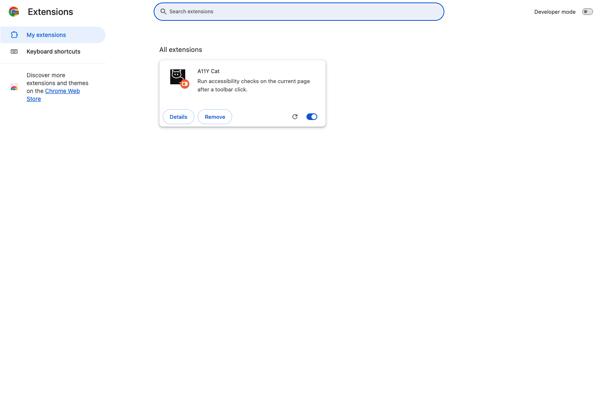

activeTab
Lets the runtime inject into the current tab only after the user clicks the toolbar action.
The documented install path is the Chrome or Chromium MV3 extension. The public site does not claim general-availability production rollout.

Private beta packages are distributed to approved testers only. If you are part of the beta, use the package link or direct package handoff provided by the maintainer.
| Channel | Status | How access works |
|---|---|---|
| Chrome Web Store private listing | Not used in this release | No private store listing is currently documented for v1.0.0-beta. |
| GitHub Releases ZIP | Primary beta channel | Approved testers download the signed beta package from GitHub Releases. |
| Direct approved beta package | Fallback channel | If the release asset is unavailable, request the approved package from the maintainer through GitHub Issues. |
Current beta package identity: a11y-cat-mv3-v1.0.0.zip (extension version 1.0.0).
a11y-cat-mv3-v1.0.0.zip.chrome://extensions, enable Developer mode, click Load unpacked, and select the unzipped package folder.| Requirement | Minimum version |
|---|---|
| Chrome or Chromium | 126+ |
| Node.js (for local build) | 20+ |
| npm (for local build) | 10+ |
| Operating system | Windows 10+, macOS 12+, Ubuntu 22+ |
chrome://extensions, open the A11Y Cat extension card and confirm Version 1.0.0 is displayed.a11y-cat-mv3-v1.0.0.zip.a11y-cat-mv3-v1.0.0.zip.metadata.json) for the exact build commit when you need build-level traceability.Report installation issues through GitHub Issues with extension version, browser version, operating system, and the failing step.
activeTabLets the runtime inject into the current tab only after the user clicks the toolbar action.
scriptingRuns the packaged extension runtime inside the active page after explicit user action.
storageStores local settings, local issue state, history, review state, and related workflow data.
host_permissions, hosted-service permissions, analytics permissions, or remote code execution permissions.
Developer build only. This path is for contributors and internal diagnostics, not for standard beta tester rollout.
npm install
npm run build:extension
npm run check:extensionchrome://extensions.dist-extension/ directory.Developer verification commands:
npm run build:extension:test
npm run check:extension:test
npm run test:extension:smokenpm run build:extension:test: builds the extension in test mode; passing output completes without build errors.npm run check:extension:test: runs extension package checks for test configuration; passing output reports no gate failures.npm run test:extension:smoke: runs smoke tests for extension startup and core routes; passing output reports all smoke checks passing.| Browser | Minimum version | Status | Notes |
|---|---|---|---|
| Chrome (desktop) | 126+ | Supported in private beta | Primary target runtime for this release. |
| Edge (Chromium) | 126+ equivalent | Limited beta validation | Manual sideload expected; not fully qualified for public release. |
| Firefox | N/A | Not available in this release | No packaged Firefox build in this public repo. |
| Safari | N/A | Not available in this release | No Safari extension package in this release scope. |

chrome://extensions with A11Y Cat loaded.chrome://extensions, reload the unpacked folder and verify Developer mode is enabled.https:// page context.For deeper runtime issues, open Troubleshooting and include extension version, browser version, and OS in the report.
chrome:// and other protected browser contexts do not support panel injection.